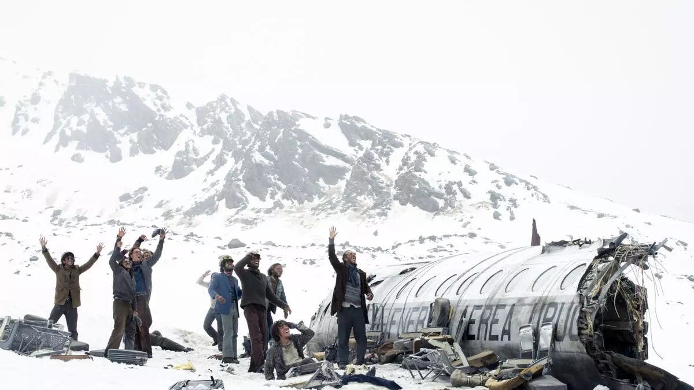

La SOCIEDAD de la NIEVE desde OTRA PERSPECTIVA | Relato y Reflexiones
El cineasta español Juan Antonio Bayona se mostró "muy feliz" por las dos nominaciones al Oscar obtenidas por su película La sociedad de la nieve, consciente de que "es muy difícil llamar la atención de Hollywood con una película hecha en español".
En una entrevista con EFE, Bayona dijo que "es muy difícil realmente llamar la atención de Hollywood con una película internacional hecha en un idioma que no es el de ellos".
REPARTO

Enzo Vogrincic como Numa Turcatti.
Agustín Pardella como Nando Parrado.
Andy Pruss como Roy Harley.
Matías Recalt como Roberto Canessa.
Tomás Wolf como Gustavo Zerbino.
Diego Vegezzi como Marcelo Pérez del Castillo.
Fernando Contigiani como Arturo Nogueira.
Esteban Kukuriczka como Fito Strauch Urioste.
Valentino Alonso como Alfredo Pancho Delgado.
Francisco Romero como Daniel Fernández Strauch.
Esteban Bigliardi como Javier Methol.
Agustín Della Corte como Antonio Tintín Vizintín.
Louta como Gastón Costemalle.
Blas Polidori como Gustavo Coco Nicolich.
Benjamín Segura como Rafael Vasco Echavarren.
Santiago Vaca Narvaja como Daniel Maspons.
Rafael Federman como Eduardo Strauch Urioste.
Emanuel Parga como el sargento Carlos Roque.
Felipe González Otaño como Carlitos Páez.
SINOPSIS: Resumen sobre el largometraje

Qué sucede cuando no tienes ropa, el frío te cala los huesos, cuando no tienes comida y el hambre te consume. En octubre de 1972 en Montevideo. En Uruguay el equipo de rugby "All christians club", está en pleno juego Roberto canesa intentando ser el Héroe ignora los pedidos de sus compañeros de pasar el balón y termina siendo derribado por el equipo contrario tras el partido sus compañeros lo reprenden lanzándole ropa sucia hasta que Marcelo Pérez del Castillo El capitán calma a todos recordándoles que necesitan reunir dinero para su próximo partido en Sant Santiago de Chile para costear el vuelo empiezan a invitar amigos y conocidos Gastón costemalle durante una misa pasa una nota a Numa turcatti quien aunque no juega rugby es invitado a unirse al viaje Numa rechaza la invitación pero el equipo insiste ofreciéndole incluso una lista con teléfonos de chicas aún así Numa se niega Y entonces su amigo Pancho le menciona que quiere que sea su viaje de despedida antes de que la vida adulta lo separe y Numa finalmente acepta el viaje.
El día de la partida los pasajeros se reúnen y Susana toma una última foto grupal antes de abordar el vuelo despega con 40 pasajeros y cinco tripulantes lleno de risas y buen ánimo incluso cuando atraviesan La cordillera de los Andes se topan con turbulencias pero nadie se inquieta demasiado el sargento Carlos Roque indica que los vuelos se desvían al sur para eludir los vientos que se generan entre el calor del campo argentino y el frío montañoso que crean un efecto de succión entonces despreocupados continúan su viaje con entusiasmo.
Al aproximarse una ola de turbulencia agita el avión Carlos Páez bromeando con el altavoz es interrumpido por Roque quien revisa la ruta desde atrás de repente el avión desciende bruscamente alarmando los pasajeros más aún cuando Rock es lanzado contra el techo las turbulencias aumentan y en un intento desesperado por evitar una montaña que emerge de las nubes el piloto trata de Elevar el avión sin embargo es tarde la cola impacta contra la montaña expulsando a los pasajeros de atrás incluido Gastón el resto del avión logra un aterrizaje forzoso en la nieve deslizándose y desmantel hasta detenerse la fuerza del impacto provoca que los pasajeros choquen y se priman causando fracturas y la muerte de los que están adelante.
Al inicio vimos un partido en el que las acciones individualistas de Roberto generaron reclamos de parte de su equipo y es que el rugby es un deporte de contacto total en el que dos equipos de 15 jugadores compiten para avanzar el balón hacia el territorio del adversario pero con la particularidad de que el balón solo puede ser pasado hacia atrás o hacia los lados esto fomenta una dinámica de juego donde la victoria depende menos de las estrellas individuales y más del trabajo en equipo en el rugby es esencial minimizar el ego y comprometerse plenamente con el equipo la esencia del rugby se resume en la acción de tomar el balón correr hacia el oponente atraerlo y luego pasar el balón lo que fomenta los jugadores un espíritu de colaboración y sacrificio personal por el bien del equipo además la diversidad de talentos y físicos en un equipo de rugby altos bajos fuertes delgados es clave ya que cada jugador tiene un rol específico que desempeñar lo que subraya la idea de que el éxito se basa en la fuerza del equipo en su conjunto y no en las habilidades de unos pocos destacados ahora este equipo se enfrentará al mayor desafío de su vida donde la mentalidad forjada en el campo de rugby será fundamental para su supervivencia.
Numa despierta entre gritos de angustia y Socorro logra liberarse y ayuda a Roberto Marcelo y Eduardo quienes milagrosamente están ilesos Roberto estudiante de Medicina toma la iniciativa en ayudar a los heridos reponiendo una pierna dislocada en medio de la conmoción así comienza la lucha por sobrevivir en la implacable cordillera marcando el inicio de su pesadilla el 13 de octubre de 1972 descubren que el piloto está vivo aunque gravemente herido Marcelo intenta usar la radio pero no funciona en sus últimos momentos el piloto entre susurros les desea Que Dios los acompañe durante la primera noche con la temperatura cayendo 30 gr los sobrevivientes usan maletas para bloquear la entrada y tratar de conservar algo de calor Aunque el frío es implacable se apilan como pueden vivos y muertos mezclados en un intento desesperado por mantenerse calientes mientras el frío quiebra hasta las botellas Marcelo El capitán insta a todos a no dormirse para no congelarse pero a pesar de sus esfuerzos algunos no sobreviven la noche al amanecer con la llegada del sol que les proporciona un poco de calor Numa y los demás explora a los alrededores encontrándose completamente aislados entre la nieve y las rocas descubren que Nando y Susana están graves sin un sitio adecuado para atenderlos Marcelo entonces manda acondicionar el interior del avión para los heridos quitando asientos y escombros luego buscan comida en las maletas y acomodan a los fallecidos afuera esperando el rescate pronto.
Hasta aquí este grupo nos da una cátedra sobre cómo disminuir el caos en entornos desconocidos y hostiles tras el accidente vimos que lo primero que hacen es evaluar su entorno y los recursos que tienen disponibles y acto seguido se organizan asignando tareas basadas en las habilidades individuales la voluntad y la condición física de cada uno y esta organización es clave para disminuir el caos y asegurar la supervivencia porque les permite maximizar sus escasos recursos y quizás más importante aún les da un fuerte sentido de propósito y comunidad bajo circunstancias extremadamente difíciles de hecho Eduardo strauch uno de los sobrevivientes recuerden sus memorias para el resto del mundo estábamos Muertos pero seguíamos vivos cada vezmás cohesionados y organizados en lo que llamábamos la sociedad de la la nieve donde cada uno de nosotros tenía un papel que desempeñar y todos éramos responsables los unos de los otros inventamos formas de fabricarnos agua y refugio y conseguimos convertir los restos del fuselaje en un refugio que aunque miserable era nuestra única posesión en la montaña e incluso empezaba a parecerse un poco un hogar Marcelo raciona la poca comida que Encuentran asignando una galleta y una aceituna por persona de pronto escuchan un motor en la distancia.
Por lo que gritan esperanzados pero sin éxito Con la llegada de otra noche todos buscan trapos abrigo ropa o lo que sea que los cubra del frío Marcelo trata de mantener el ánimo asegurando a Fito que el rescate vendrá mañana Fito no es tan optimista pero prefiere no llevarle la contra el Capitán al amanecer del Tercer día Nando despierta herido pero vivo se arrastra para ver a su hermana Susana aún inconsciente pero viva sin embargo al preguntar por su madre se entera de que no sobrevivió sintiéndose culpable por haberlas invitado los sobrevivientes improvisan un filtro de agua y marcan una x con las maletas como señal de auxilio su esfuerzo parece dar frutos cuando un avión cercano responde con un movimiento de alas el grupo grita de alegría creyendo que han sido vistos Pero a medida que pasan las horas sin que nadie venga por ellos la esperanza se desvanece mientras esperan el grupo se distrae del hambre recordando comidas caseras y tras hacer camas improvisadas para los heridos oyen motores otra vez pero sin avistamientos se dan cuenta que el avión en realidad nunca los vio Marcelo insta mantener la fe en que el rescate vendrá y pide que no digan nada de esto a los más chicos para no hundir la moral Pero cuando Marcelo se aleja para reflexionar.
Roberto menciona la regla de tres el ser humano aguanta 3 minutos sin respirar tres días sin agua y tres semanas sin comer Aunque aclara que donde están es mucho peor ya que por el frío y la altura consumen cuatro veces más calorías Numa Recuerda que Rocky habló de baterías en la cola del avión y propone buscarlas en el lugar del choque para intentar arreglar la radio con pocas opciones el grupo accede y fabrica gafas de sol caseras y Cuerdas con cables y vidrios y se lanza a escalar la montaña avanzan hasta que su avión es invisible en el vasto blanco se detienen un momento para descansar pero al Escuchar El imponente estruendo de una avalancha cercana deciden regresar al fuselaje al sexto día sin comida Numa explota FL a las rocas cercanas en busca de alimento pero sin éxito por otro lado Fito menciona que Nando dijo que estaba dispuesto a comer cadáveres antes que morir de hambre Fito piensa que no hay otro camino y Roberto está de acuerdo Entonces dentro del avión con todos temblando de frío y hambre extrema Roberto Fito y otros tratan de convencer a Marcelo de comer los cuerpos congelados ante la resistencia Roberto explica que sin comida el cuerpo se seca como una planta lo que se demuestra en la orina negra de todos Carlitos teme la condena divina y Numa quedar preso argumentando que no tienen derecho a usar un cu sin su consentimiento Roberto sin embargo insiste en su derecho a la supervivencia la discusión concluye sin consenso y Quienes se oponen a consumir proteína humana intentan subsistir comiendo lana y tabaco mientras los problemas renales se intensifican de pronto Nando descubre que su hermana susi ha dejado de respirar mientras procesan la tristeza de su muerte Gustavo coco escribe a sus padres expresando La dura realidad que enfrentan les dice que los extraña mucho y que constantemente Ora a Dios para poder verlos al menos un día más.
Gracias a la información el arriero llevan a Roberto a su casa donde finalmente pueden comer bien y de repente decenas de periodistas llegan para entrevistarlos Mientras tanto en el fuselaje la noticia de que Nando y Roberto han sido encontrados interrumpe el sueño de los supervivientes el grupo se arregla para verse bien cuando sean rescatados Fito y su primo decían enterrar los huesos de sus compañeros mientras Gustavo guarda pertenencias personales de los que dejaron atrás Roberto por su parte Ora a Dios el mundo entero se entera por la radio de los nombres de los 16 sobrevivientes Roberto Gustavo Eduardo Álvaro Fernando Antonio Pedro Alfredo Roy José Luis Ramón Javier Carlitos Roberto Daniel Adolfo Y entonces los helicópteros de rescate guiados por Nando llegan a donde están los demás quienes saltan y gritan de alegría Al subir al helicóptero Hay un problema con el peso y el copiloto ordena a Gustavo dejar la maleta con las pertenencias de los fallecidos pero este se niega a abandonarla y prefiere quedarse en la nieve finalmente el piloto le permite llevarla y despegan dejando atrás el fuselaje que había sido su hogar durante 70 días Numa como voz de todos los que no sobrevivieron y que fueron fundamentales narra que el 22 de diciembre los 16 sobrevivientes llegan a un campamento en el valle para reunirse con sus familias en el hospital son acogidos por una multitud como Héroes los médicos atienden sus cuerpos esqueléticos y quemados por el sol y tras meses toman su primer baño limpiándose de la sociedad acumulada los periódicos los llaman Héroes sin embargo Numa dice que no se sienten así explica que se preguntan por qué sobrevivieron solo ellos buscando un propósito sin embargo Numa como representante de los fallecidos los insta a ser ellos mismos el sentido a continuar apoyándose mutuamente y compartir con todos lo que hicieron en la montaña la película inició con un acto egoísta en el campo de rugby pero en el campo de la nieve prevalece la mentalidad de sacrificio inherente a este deporte donde el bienestar del grupo supera al individual.
REFLEXIONES
En los momentos más adversos en un mundo que a veces parece ensalzar en el individualismo no debemos olvidar que es juntos apoyándonos unos a otros como realmente podemos superar las adversidades y Cómo podemos hacer del mundo un lugar mejor para todos la sociedad de la nieve nos Recuerda que nuestro fundamento más íntimo Descansa en la necesidad que tenemos de cuidarnos unos a otros Somos humanos y nada de lo humano nos debe ser ajeno para concluir quiero reflexionar sobre una pregunta que abrumó a varios en la película y que a muchos de nosotros también suele angustiarnos en momentos de Gran sufrimiento tienen algún sentido el sufrimiento y las muertes nos preguntamos esto preocupados de que si carecen de sentido entonces la propia supervivencia pierde valor si la vida se reduce a superar obstáculos o sucumbir ante ellos dejando su significado alzar quizás no merezca la pena vivir pero esta perspectiva cambia cuando comprendemos que cada experiencia desafía al ser humano a encontrar su propio significado la vida no Debería ser una búsqueda pasiva de sentido sino una invitación a crearlo quizás en vez de preguntarnos el sentido de la vida deberíamos ver que la vida nos hace la pregunta directamente a cada uno de nosotros y la respuesta somos nosotros mismos el significado de la vida es más sobre ser que de buscar y ser el sentido significa asumir responsabilidad por nuestra vida mejorarnos a nosotros mismos cuidar de los demás y contribuir a ser del mundo un lugar mejor.
VIDEOS
En la cordillera de los Andes, un accidente de avión deja a un grupo de jóvenes rugbiers varados en la nieve. Atrapados en un mundo hostil, sin comida ni refugio, deberán recurrir a su ingenio y a la fuerza del compañerismo para sobrevivir. La película explora los límites del ser humano, la capacidad de adaptación y la importancia del espíritu de equipo en la lucha por la supervivencia.